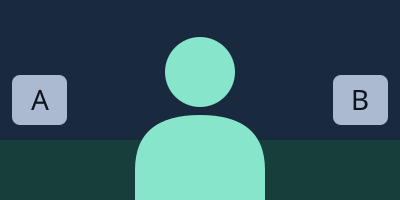

Un cadre pour une image, pas une nouvelle caméra
Afficher une image dans ton app.
Comprends ce qui fournit l’image, la place qu’elle occupe et ce que le recadrage montre ou cache. Applique ces choix à la photo du profil.
Cette courte extension reprend le profil des pages précédentes. Elle adapte l’affichage sans ajouter de capture, de permission ou de sauvegarde.
01 / D’où vient ce qu’on affiche ?
Une ressource intégrée et une photo sont deux sources.
Tu as une icône intégrée à l’app et une photo enregistrée pour le profil. Les deux peuvent être affichées, mais on ne les charge pas de la même façon.
- Une ressource : un fichier livré avec l’app, par exemple
res/drawable/ic_profile.xml.painterResource(R.drawable.ic_profile)permet de le préparer pour l’affichage. - Une photo du profil : un fichier créé pendant l’utilisation. Le chargeur doit lire et décoder ce fichier ; son chemin n’est pas un identifiant
R.drawable.
JPEG, PNG ou WebP peuvent contenir des images en pixels. Un dessin vectoriel XML décrit des formes. Le composant Compose Image affiche le visuel préparé ; il ne prend pas une photo et ne sauvegarde pas le profil.
Pour le fichier photo, réutilise le chargeur déjà installé ou réalisé dans ton clone. Ne colle pas son chemin dans painterResource et ne décode pas une grosse photo à chaque affichage. La documentation Android distingue le chargement des ressources et des autres sources.
02 / Une image a ses propres proportions
Fit garde l’image entière ; Crop remplit en recadrant.
Si une photo horizontale entre dans un cadre carré, il faut choisir ce qu’on préfère : voir l’image entière ou remplir le cadre. La taille du cadre et le réglage contentScale répondent à deux questions différentes.

Garde l’ensemble visible et ses proportions ; une partie du cadre peut rester libre.
Remplit le cadre en gardant les proportions ; certaines parties sont coupées.
Schémas SVG et cadrages CSS pour le cours, pas des photos ni des captures Android. Les deux utilisent le même dessin source.
Pour un avatar rond, Crop peut convenir si le visage reste visible. Pour une image de question dont les détails comptent, Fit est souvent un meilleur point de départ. Évite d’étirer l’image pour la faire rentrer : une forme ronde deviendrait ovale.
Le centrage par défaut peut couper un sujet placé au bord. Compare avec tes vraies photos plutôt que de choisir le cadrage uniquement sur l’image d’exemple. Les options sont décrites dans la documentation de personnalisation.
03 / Une modification ciblée du profil
Donne une place stable à la photo.
Dans le fichier de vue de profile_view, tu peux ajouter ce petit composant fourni, à l’extérieur des autres fonctions. Si un composant ProfilePhoto existe déjà après le travail avec l’agent, adapte-le ou choisis un autre nom sans le déclarer en double. Ajoute seulement les imports manquants.
import androidx.compose.foundation.Image
import androidx.compose.foundation.background
import androidx.compose.foundation.layout.Box
import androidx.compose.foundation.layout.size
import androidx.compose.foundation.shape.CircleShape
import androidx.compose.material3.MaterialTheme
import androidx.compose.material3.Text
import androidx.compose.runtime.Composable
import androidx.compose.ui.Alignment
import androidx.compose.ui.Modifier
import androidx.compose.ui.draw.clip
import androidx.compose.ui.graphics.painter.Painter
import androidx.compose.ui.layout.ContentScale
import androidx.compose.ui.unit.dp@Composable
private fun ProfilePhoto(
painter: Painter?,
modifier: Modifier = Modifier,
) {
if (painter == null) {
Box(
modifier = modifier.size(144.dp).clip(CircleShape)
.background(MaterialTheme.colorScheme.surfaceVariant),
contentAlignment = Alignment.Center,
) {
Text(text = "Sans photo")
}
} else {
Image(
painter = painter,
contentDescription = "Photo du profil",
contentScale = ContentScale.Crop,
modifier = modifier.size(144.dp).clip(CircleShape),
)
}
}size(144.dp) réserve ici un carré ; clip(CircleShape) rend sa zone visible ronde. Ce choix concerne l’affichage : le fichier photo reste inchangé.
Le paramètre painter contient le visuel déjà préparé. S’il est absent, le composant propose un remplacement. La vue parente doit distinguer l’absence de photo, le chargement et une erreur, avec un message adapté ; le composant fourni ne réalise pas ce chargement.
Pour un essai avec la ressource de la barre de navigation, ajoute l’import androidx.compose.ui.res.painterResource, puis utilise ProfilePhoto(painter = painterResource(R.drawable.ic_profile)). Vérifie aussi l’import de fr.stageacademy.quiz.R dans ce package. Cet essai affiche l’icône, pas la photo du joueur.
Pour le vrai profil, fais transmettre le résultat du chargeur existant à cette zone, ou applique les mêmes réglages au composant d’image déjà utilisé. Ne remplace pas la référence de photo enregistrée par une ressource fixe. Si tu emploies l’agent, demande uniquement cette adaptation de présentation, sans changer la caméra ou le stockage.
Pourquoi ne pas lire directement tout le fichier dans Image ?
Lire et décoder une photo peut demander du temps et beaucoup de mémoire. Le chargement doit être adapté à la taille affichée et au cycle de vie ; réutilise l’intégration du clone avec l’encadrant. Envelopper une lecture lourde dans remember ne la rend pas automatiquement asynchrone.
04 / Un affichage compréhensible pour chacun
Décris le rôle de l’image et prévois les absences.
contentDescription aide les personnes qui utilisent un lecteur d’écran. Décris l’information utile, sans détailler inutilement tous les pixels. « Photo du profil » est un point de départ pour cet avatar.
Pour une image qui apporte une information dans une question, la description doit permettre de comprendre cette information. Pour une image purement décorative, une description nulle peut éviter une annonce inutile. Le contexte compte : les icônes de navigation avaient déjà un libellé.
Une photo absente ou illisible doit laisser le profil utilisable. Garde une place stable pour l’image et un message compréhensible. Afficher à nouveau la photo sauvegardée n’exige pas d’ouvrir la caméra.
Une petite taille à l’écran ne garantit pas une petite occupation mémoire : le chargement doit aussi préparer une résolution adaptée. Voir les repères Android sur les images.
05 / Une comparaison avec tes vraies photos
Change le cadrage, garde le profil.
- Ouvre le profil enregistré et repère le fichier qui fournit sa photo.
- Compare Crop et Fit dans le même cadre, avec une photo horizontale puis verticale si tu en disposes. Annonce ce qui devrait être coupé ou laisser une marge.
- Observe un sujet placé près du bord. Choisis le réglage qui garde l’information utile.
- Vérifie le cas sans photo et les états de chargement ou d’erreur de ton intégration. Note un cas non reproduit plutôt que de le déclarer vérifié.
- Avec l’encadrant, consulte le profil avec un lecteur d’écran si disponible. Vérifie le sens des descriptions et l’absence d’annonces répétées inutiles.
- Relance l’app : le nom et la photo validés doivent rester les mêmes. La comparaison ne doit pas recapturer ou modifier le fichier sauvegardé.
Brouillon sans envoi ni sauvegarde. Le guide n’accède pas à ta photo, ne lance pas le chargeur et ne vérifie pas l’appareil. Copie tes notes avant de fermer la page.
Garde la présentation retenue après relecture et complète ton bilan : explique d’où vient l’image, comment elle remplit son cadre et pourquoi ton choix aide le joueur.